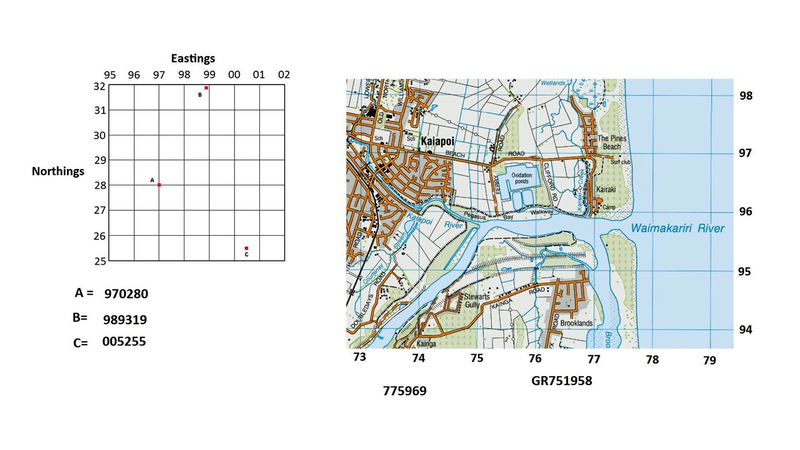
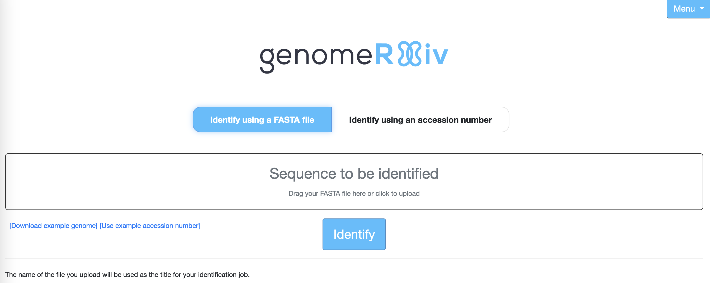

5 Whole-Genome Comparison
In this part of the workshop, you will use public resources for whole-genome identification and classification of prokaryotes to help identify your isolate.
Please ensure that you have downloaded the genome file for your isolate (isolate_genome.fasta) to a suitable location on your computer.
5.1 The Type (Strain) Genome Server (TYGS)
The Type (Strain) Genome Server (TYGS) is provided by the Liebniz Institute DSMZ, the German collection of Microbes and Cell Cultures. It provides genome-based classification of organisms by comparison against a reference database of over 20,000 sequenced bacterial type strains. TYGS is tightly-coupled to the authoritative LPSN (List of Prokaryotic names with Standing in Nomenclature) database, to ensure nomenclaturally-correct identification
A type strain is the representative of a taxon: the nomenclatural “type” on which the definition of a taxon (such as species) is based. Type strains must be deposited in at least two separate public culture collections, in different countries.
Not all taxa (in particular Candidate phyla) have type strains. It is a requirement for type strains that the organism is grown and cultured, as it cannot otherwise be placed in a culture collection. But it has been estimated that not only are the majority of bacteria and archaea so far uncultured, but they may even be unculturable in the laboratory (Hofer (2018)).
TYGS takes a prokaryotic genome as input, and assigns a taxonomic identity after a series of pairwise genome comparisons.
First, the input genome is compared to the type strain database using an approach called MASH (Ondov et al. (2016)). The ten type strain genomes, and the ten most closely related type strains identified by 16S rDNA gene (extracted automatically from the input) similarity.
This set of 20 type strain genomes is then used to find the best 50 matching type strains. A phylogenetic tree is then constructed using the Genome BLAST Distance Phylogeny approach (GBDP, Henz et al. (2005)), and the resulting distances used to determine the 10 closest type strain genomes for each of the user genomes. The between-genome distances for this are calculated using digital DNA-DNA hybridisation (dDDH, Meier-Kolthoff et al. (2013)).
TYGS compiles classification output into a PDF file, and presents the resulting phylogeny on the TYGS website. All results tables and trees can be downloaded in shareable formats.
- Go to the TYGS server
- Click on
Submit your query(top menu), orSubmit your job(button) to reach the query page
- Click on the
Browse…button and navigate to yourisolate_genome.fastafile to select it for classification. - Enter your email address in the
Provide contact detailsfield

- Click on
Submit queryand wait for the results
This may take some time (maybe over an hour, depending on server load!), and may not be complete before the end of the workshop.
Please move on to the next section while you are waiting.
- When you get the result confirmation email, download and inspect the result PDF, and examine the whole-genome tree.
- What is the predicted taxonomic classification of your isolate’s genome?
- How similar is your isolate’s genome to the closest match? (the \(d_4\) result is the dDDH (digital DNA-DNA hybridisation) score)
- What are the most closely-related species and genera in the whole-genome tree? Is the distribution of genera consistent with what was previously known about Ochrobactrum and Brucella taxonomy?
- What is your current opinion about the identity of your isolate? How confident are you in the identification?
5.2 genomeRxiv
genomeRxiv is a recently-developed approach to bacterial classification that promises to identify and classify prokaryotic genomes quickly and accurately into categories called LINgroups (LIN: Life Identification Number). LINgroups are a taxonomy-independent, quantitative categorisation scheme that organises genome sequences by similarity in multidimensional “space”. These categorisations can then be used to relate alternative taxonomic assignments, and other annotations, to each other (Pritchard et al. (2022)).
genomeRxiv works
genomeRxiv works in a similar way to map grid references.

genomeRxiv compares input sequences to a reference database with a very fast bioinformatics algorithm (sourmash) to get a set of good matches, and then refines the match with a more precise but slower algorithm (ANI). genomeRxiv then assigns a LINgroup to the genome (Tian et al. (2021)). The LINgroup is a string of numbers, analogous to a map co-ordinate. The shorter the LINgroup, the lower the resolution of identification (Phylum, Family, etc.), and the longer the LINgroup, the finer the resolution (species, subspecies, strain, etc.).
The first key difference between LINgroups and map co-ordinates is that LINgroups are not co-ordinates on a two-dimensional surface, but in many-dimensional space. The second is that a single number describes the location, rather than two numbers (the “Easting” and “Northing” of map co-ordinates. Finally, grid references represent a physical space (such as the surface of the Earth), and LINgroups represent “sequence space” - which is not physical (Mazloom et al. (2022)).

Taxa are then defined by the volumes in space circumscribed by genomes which are examples of each taxon. When a new unknown genome is added, a LINgroup is assigned and - if it lies within a volume of space contained only by members of a single taxon (e.g. E. coli), the genome is assigned that taxon.
The genomeRxiv webservice allows users to input their bacterial genomes and rapidly obtain, or predict, taxonomic assignments on the basis of genome sequence.
genomeRxiv remains under active development and is not yet fully-released, although it is public and usable.
- Go to the genomeRxiv server
- Click on Identify using a FASTA file

- Either click on the
Sequence to be identifiedlink to bring up a dialogue box through which you can upload theisolate_genome.fastafile, or drag theisolate_genome.fastafile onto the text. - Click on
Identifyand wait for the results
The genomeRxiv site may ask you to allow pop-ups. You should allow the pop-ups, as these contain the identification output you need.
genomeRxiv provides three classifications:
- Tentative LIN: this is the LINgroup specific to the submitted genome. It may or may not match an existing, previously-assigned LINgroup.
- Closest Genome: this is the LINgroup corresponding to the closest-matching genome in the genomeRxiv database. It is unlikely to match the LIN of the submitted genome exactly, even if it’s a genome from the same species.
- Member LINgroups: this is LINgroup that circumscribes a known taxon, as close to and enclosing the submitted genome.
- What is the predicted taxonomic classification of your isolate’s genome? (Check the
Member LINgroupsresult) - What is the taxonomic identity assigned to the most similar genome in the database?
- How similar is your isolate’s genome to the closest match? (Look at the
ANI to Targetvalue) - What is your current opinion about the identity of your isolate? Have you modified your classification? How confident are you in the identification?
You have now used a number of different online bioinformatics tools to obtain a possible taxonomic classification for the isolate in your blood sample. You should, by this point, have some idea of what you think the organism is, and how confident you are. Now it’s time to take a look at the official prokaryotic nomenclature database, to get a little more context around the candidate taxonomic name. Click on the link to LPSN (here, or below), to keep going.